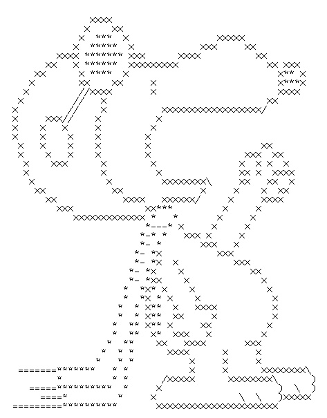

El Arte ASCII
"Publicidad, expresión: todo en menos de 1Kb", 02 de Agosto 20XX
Usar la codificación de los carácteres en pantalla de los computadores como por ejemplo la unicode, suena como un acto de locura.
A decir verdad, la importancia de la escritura digital como método de publicidad, arte y memes sigue estando en pie pese a que sea superada por mucho por otros medios de expresión digital como archivos de imágenes ó la relativamente nueva webm.
Pero... ¿Cómo surgió el arte ASCII? y ...